No features match that search.
Getting started
Sheaf opens a PDF straight off your disk and edits it entirely in the browser tab. No account, no upload, no telemetry — and it works offline.
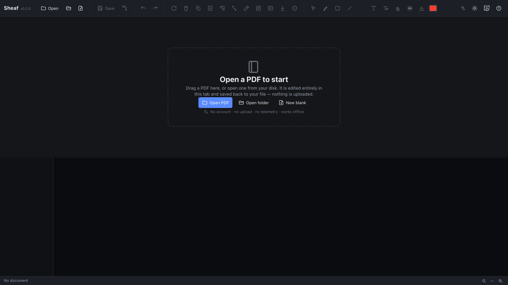
Open a PDF to start
Drag a PDF in, pick one from disk, or open a whole folder. Everything happens in this browser tab — no account, no upload, and it works offline.
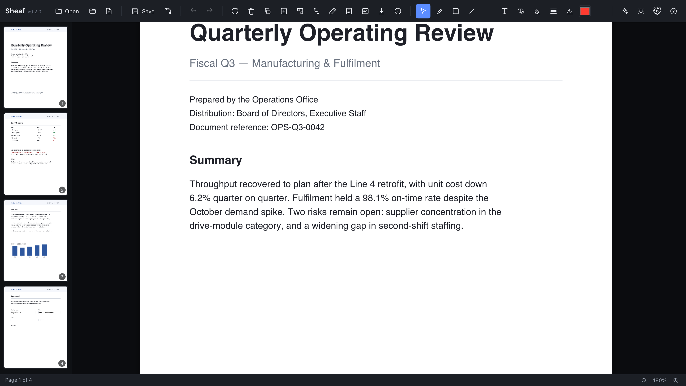
The workspace
A thumbnail rail, the page canvas, and one toolbar. Every button dispatches through the same core as the keyboard shortcuts and the optional agent face — one engine, several doors.
Pages
Page-level operations act on the pages you select in the left rail, or the current page when nothing is selected.
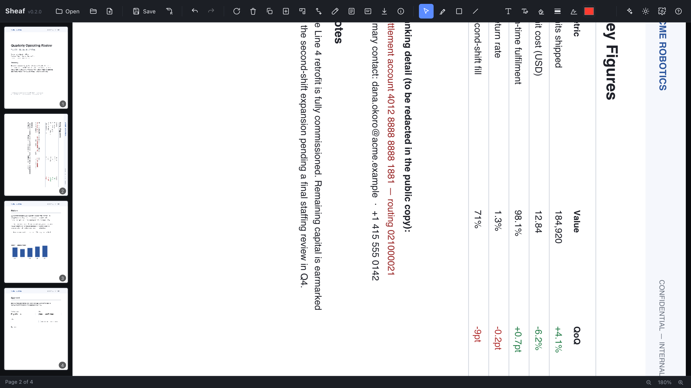
Reorder, rotate, delete pages
Select pages in the rail, then rotate, duplicate, delete, scale, extract, or insert blanks — or merge another PDF in. Drag a thumbnail to reorder. (Page 2 is shown rotated.)
Markup & text
Add annotations on top of the page, or change the text that is already inside it.
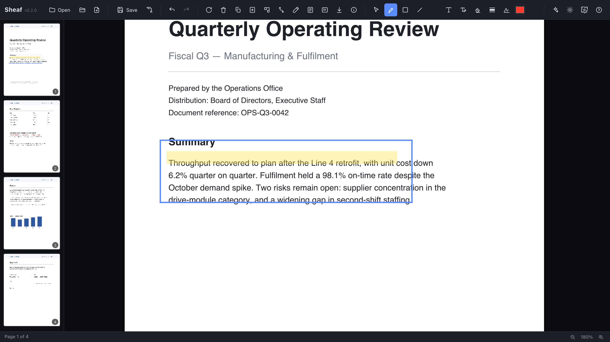
Highlight, shapes & freehand
Highlighter, rectangle, line, and pencil tools draw straight onto the page. Pick a colour in the toolbar and drag where you want the mark.
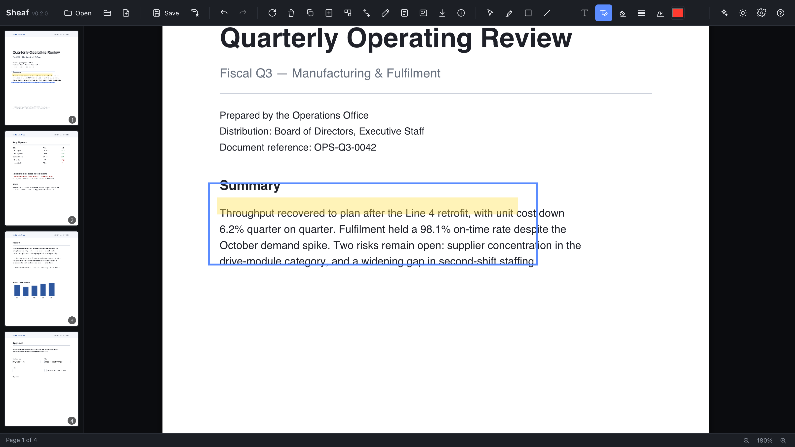
Edit the text that's already there
The Edit-text tool finds the line you click through the PDF text layer and lets you retype it in place, matched to the surrounding font and size.
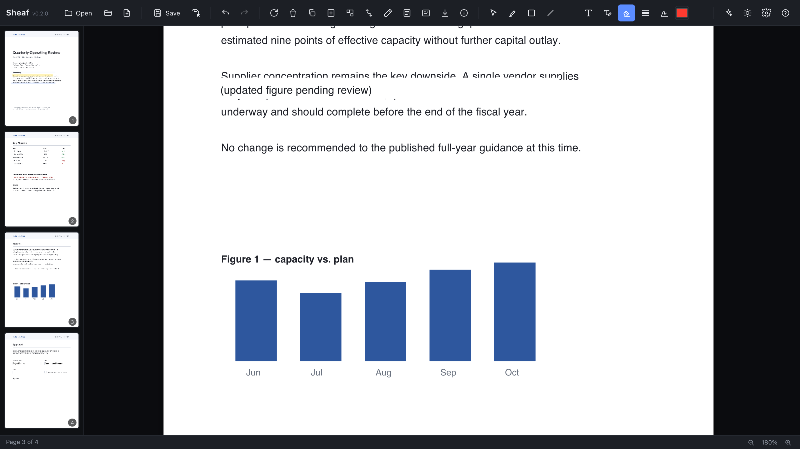
Whiteout & retype
Cover a region in white and optionally type replacement text over it — quick corrections that don't need true byte removal.
Redaction
The feature Sheaf takes most seriously: removal that is real, not cosmetic.
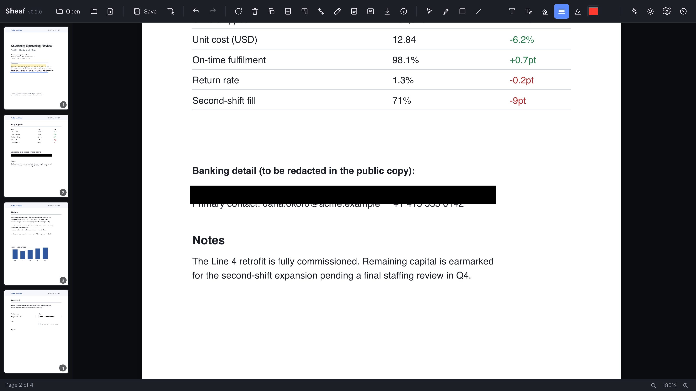
True redaction — not a black box
Redaction removes the underlying text and image bytes from the PDF and then draws the bar. Save the file and the secret is genuinely gone — verifiable in the bytes, not just hidden under a rectangle.
Sign & forms
Put a signature on the page, and work with interactive form fields.
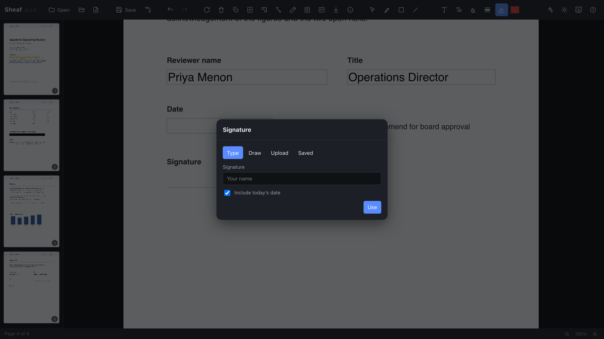
Signatures
Type, draw, upload, or reuse a saved signature, then place it anywhere on the page. Saved signatures live in this browser only.
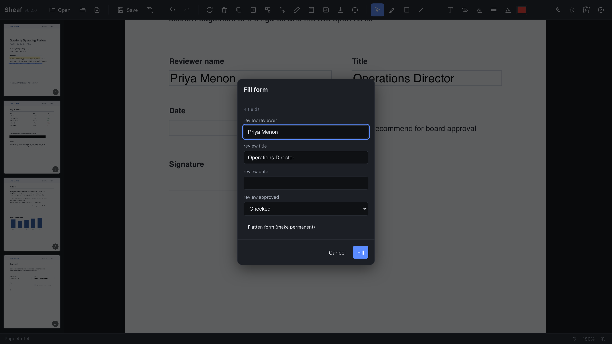
Fill & flatten forms
Sheaf detects AcroForm fields and fills them from a single dialog. Flatten the form to bake the values permanently into the page.
Marks, OCR & export
Stamp every page, lift text out of scans, and get pages back out as images or text.
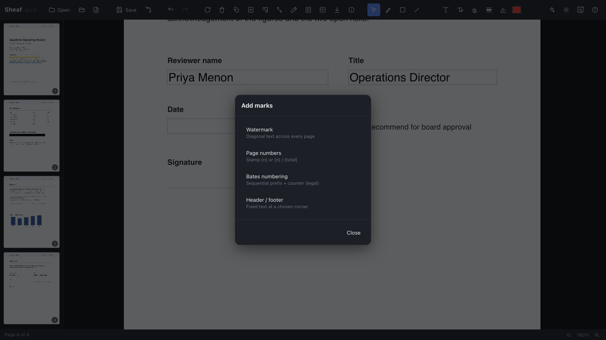
Watermarks, page numbers, Bates
Stamp a diagonal watermark, page numbers, sequential Bates numbers (for legal work), or a fixed header/footer across every page.
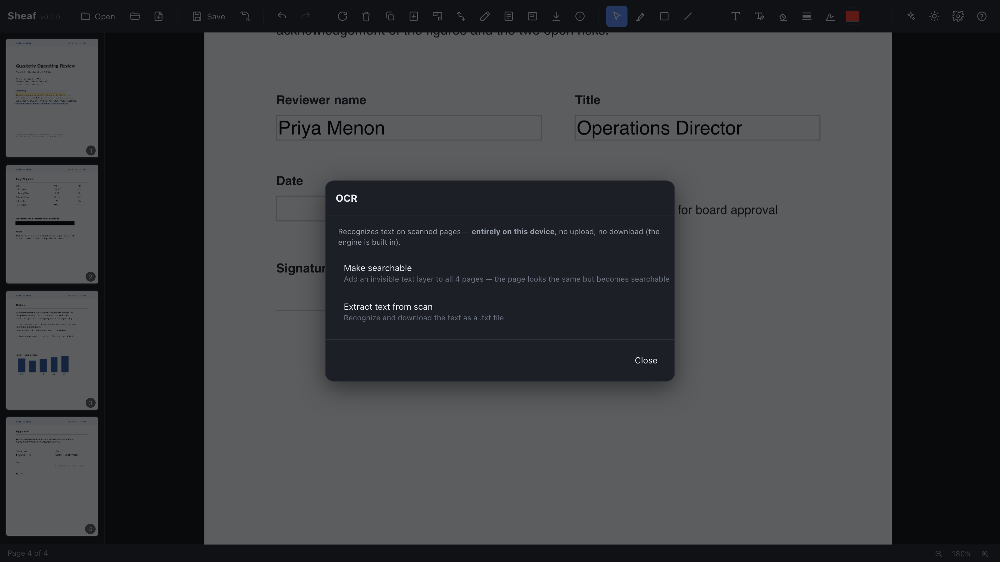
Make a scan searchable
Tesseract runs entirely in the tab to add a searchable text layer to scanned pages, or to extract their text. Nothing is uploaded.
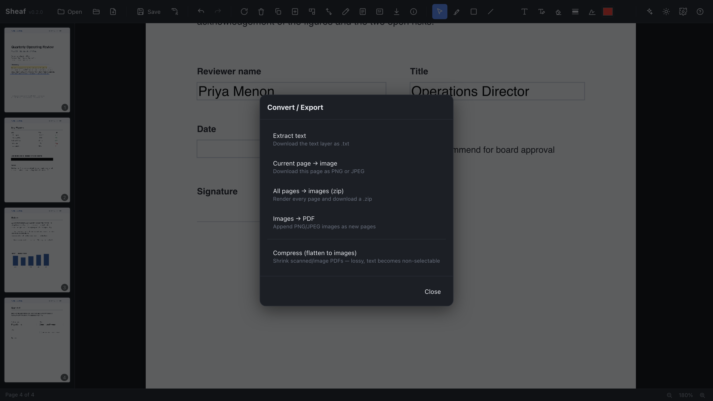
Export & convert
Render pages to images, pull out plain text, or save a converted copy. The original file is never touched.
Document & saving
Edit the document’s properties and control exactly how it is written back to disk.
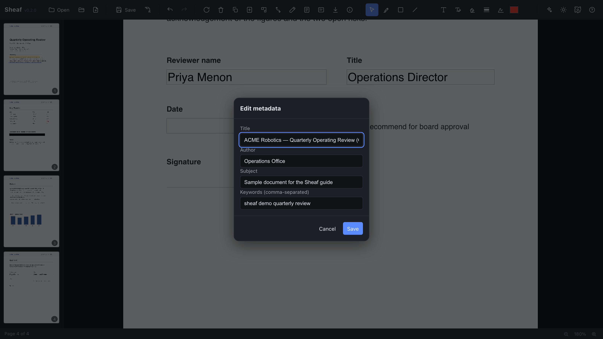
Title, author, keywords
Read and edit the document's metadata. Writing is deterministic — Sheaf won't silently re-stamp modification dates you didn't change.
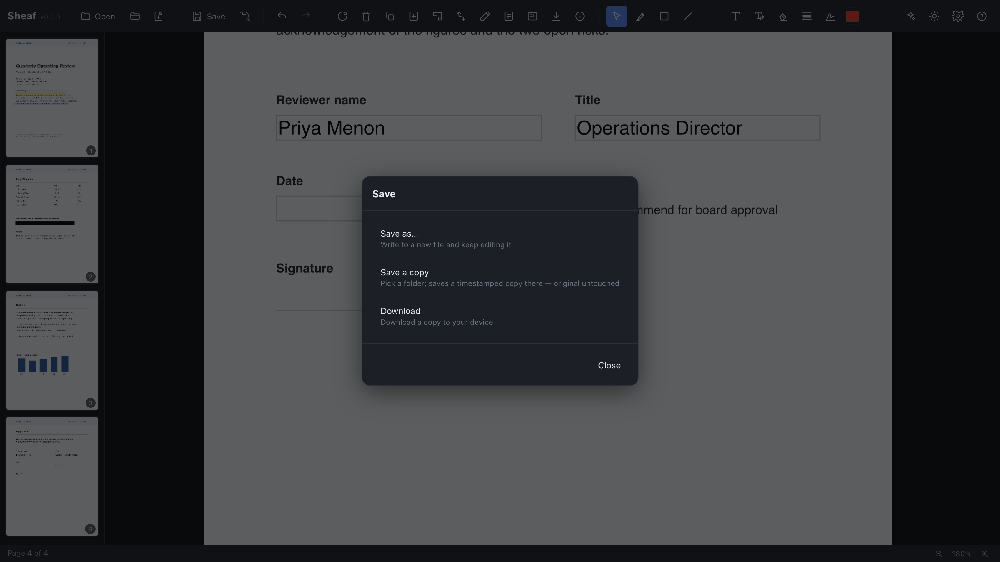
Save in place, or a copy
Save back to the same file (File System Access), drop a timestamped copy into a workspace folder, or download — your choice, no lock-in.
AI sidecar
AI is an optional, removable sidecar — never a requirement and never a default.
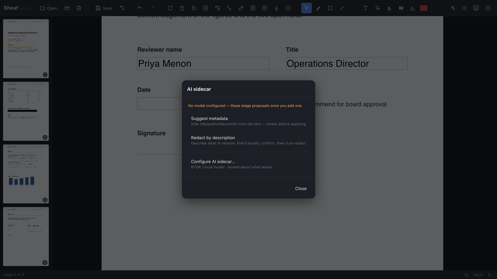
Optional AI sidecar (BYOK)
Off by default and fully removable. When enabled it reaches a local model or your own API key, and is honest about exactly what — if anything — leaves the machine.
Settings, help & themes
Tune Sheaf to your taste; everything here stays local to your browser.
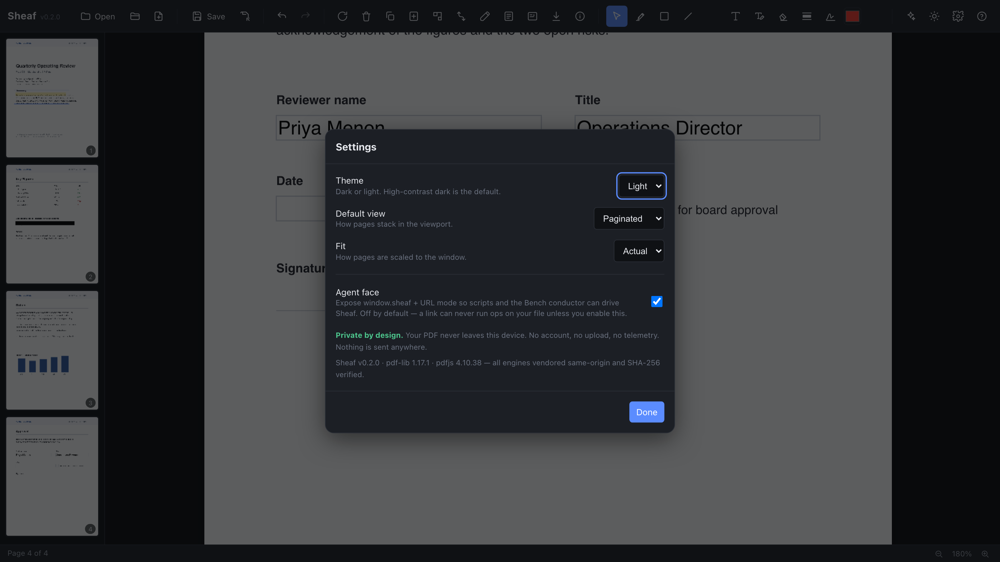
Preferences
View mode, the developer agent face, AI configuration, and theme. Only preferences are ever persisted — never document content.
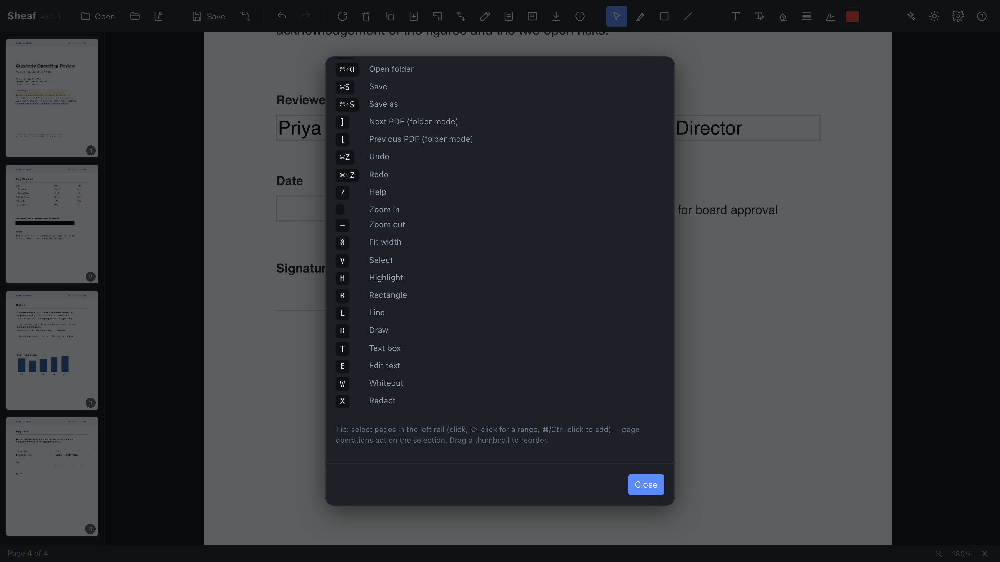
Keyboard & privacy
In-app help lists the live keyboard grammar (read from the real registry, so it never drifts) and restates the privacy posture.
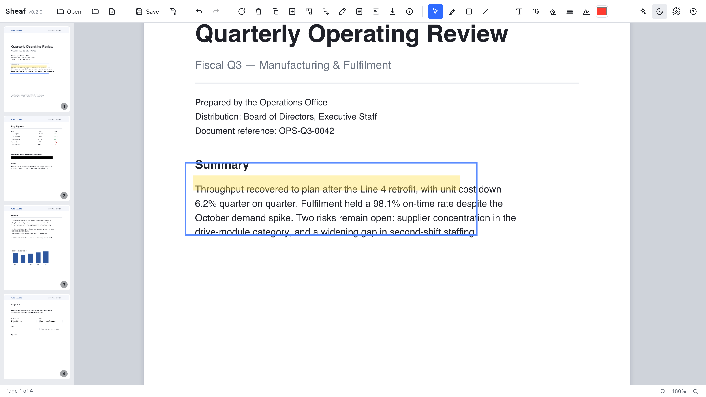
Light & dark
One click toggles the theme. The whole UI is built from design tokens, so light and dark are a single variable swap — not a second stylesheet.